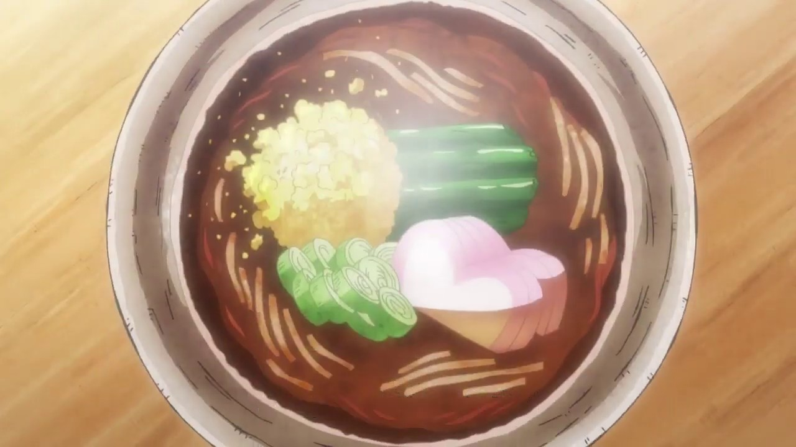

Sanji Soba's

Sanji's soba shop has been the opening gate to the latest arc of the Land of Wano. As Luffy made his way into the new land, the other Straw Hats had to blend in. Cooking delicious soba could not be a better facade for Sanji, and it allows him to gain intel about the people of Wano.
This delicious dish has citizens lined up for their chance to grab their bowls. Seeing Sanji's soba shop thriving becomes an important detail in keeping up with disguising as ordinary citizens. Sanji's soba is a delightful dish that he has perfected for its taste and the safety of his crew.
Ingredients
- 1/2 cups (355ml) dashi
- 1/2 cup (118ml) light soy sauce
- 1/2 cup (118ml) mirin
- 1/4 teaspoon sugar
Steps
- Bring dashi, soy sauce, mirin, and sugar to gentle boil over medium heat. Remove from heat and allow to cool.
- Set out 4 serving plates. Divide equally among plates: dab of wasabi, grated daikon, and scallions.
- In the meantime, bring 2-quart pot of water to boil over high heat and add soba. Return water to boil and cook the noodles until tender but firm, 3 to 5 minutes. Use strainer to remove soba from pot. Place soba into ice water and chill until noodles are cold. Drain noodles.
- Divide noodles evenly between the four plates, mounding the noodles. Pour dipping sauce into individual little bowls to serve alongside noodles.
- To eat, stir some daikon, wasabi, and green onion into dipping sauce. Take some noodles with chopsticks and dip.